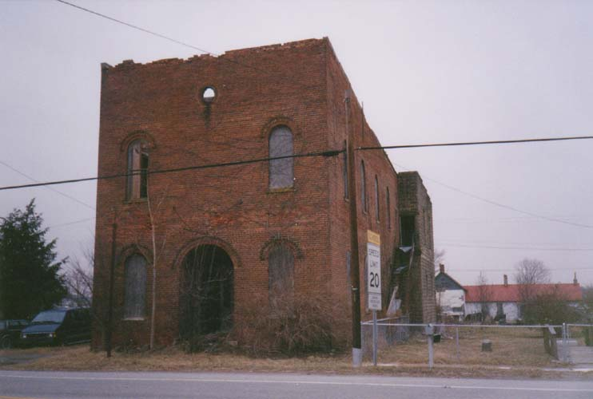
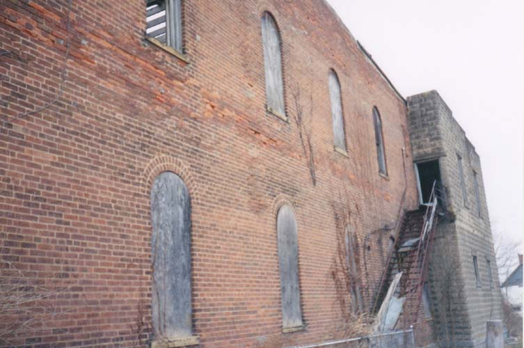
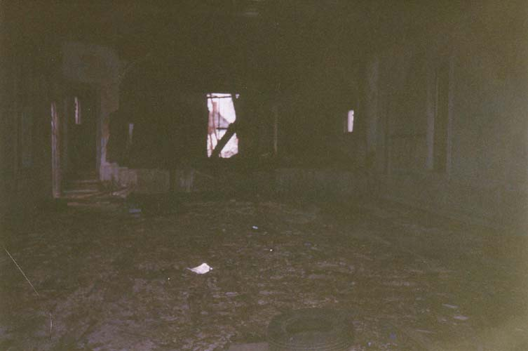
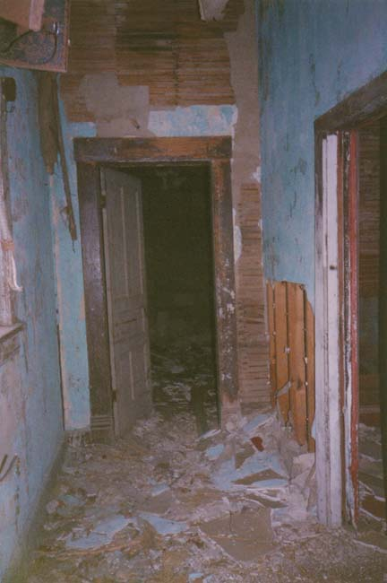
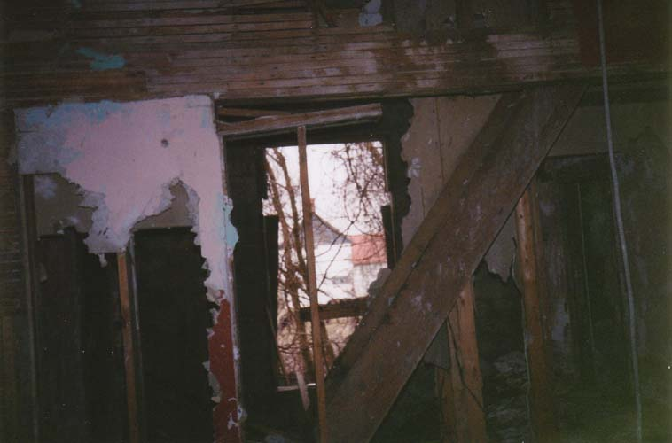
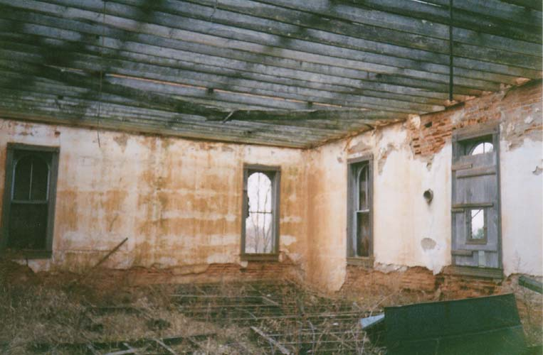
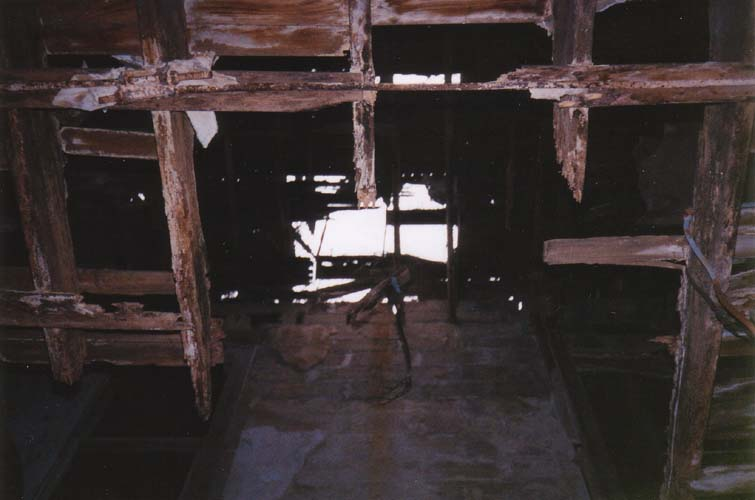

The tiny Highland County crossroads village of Rainsboro contains only a few houses, but among its few buildings is one of the coolest abandoned buildings I've ever stumbled upon: the Rainsboro Theater.

Is this the place's real name? I think it's a fair name to give it, although I have recently been informed by a former Highland County auditor that the building was mostly used as a town hall, for meetings and stonings and book burnings--things like that. But since I am too lazy to make a new banner or come up with a better name, I'll keep calling it the Rainsboro Theater.

My ex-girlfriend and I were driving back with another friend from a late-night trip to Utopia when we noticed the theater. We stopped, parked across the street, and walked in through the wide-open front doors. The first floor was rotten beyond belief; my friend's foot went straight through on the way in, and mine went through on the way out. The only way to cross the room was by measuring where the support beams were underneath the floorboards. There is definitely no basement to the Rainsboro Theater; if there were my body would still be in it.

At the head of the main first-floor room was the stage, where plays must have been performed at one time. Vaudville shows were probably performed here; I'd imagine the theater had the market cornered when it came to Saturday night entertainment in Rainsboro.

The stage was a little sturdier. It was here that the local kids had obviously hung out a few times; empty beer cans piled in the corner were our first clue. A very frail and rotten wooden stairway led up from the backstage area to the second floor. I was the only one who was willing to climb this staircase; the other two went back out and climbed the metal fire exit on the side wall.

The second floor of the Rainsboro Theater is very impressive; the ceiling is all but gone, and grass and other vegetation has begun to grow on the floor of the big second floor room.
There were a couple of other rooms on the second floor, but the walls were so rotten and filled with holes that you could get a sense of the entire floor wherever you stood. When I leaned against one wall, it fell down, and bricks began to fall down all around me. My foot went through the floor once or twice. I can say with absolute certainty that this is the most dangerous abandoned building I've ever been in.

As far as I know, the Rainsboro Theater still stands. If you're ever in the neighborhood, check it out, but be very careful; you could probably break a few bones in this place.
Back